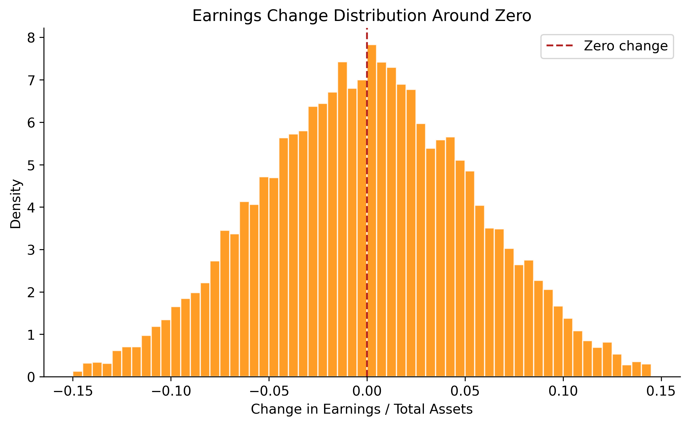

import pandas as pd
import numpy as np
import matplotlib.pyplot as plt
import matplotlib.ticker as mticker
import statsmodels.api as sm
import statsmodels.formula.api as smf
from scipy import stats
from typing import Optional
import warnings
warnings.filterwarnings("ignore")
plt.rcParams.update({
"figure.dpi": 150,
"axes.spines.top": False,
"axes.spines.right": False,
"font.size": 11,
})27 Earnings Management: Detection and Measurement
Earnings management refers to the purposeful intervention by managers in the financial reporting process to achieve outcomes that serve private objectives, whether to meet analyst forecasts, trigger bonus thresholds, avoid covenant violations, or influence equity valuations. While the concept is intuitive, its rigorous detection poses one of the most enduring methodological challenges in empirical accounting research.
The difficulty is fundamental: researchers observe total accruals, which combine a legitimate component (reflecting genuine economic activity) with a discretionary component (reflecting managerial intervention). Separating these two components requires a model of what accruals should be absent manipulation, what the literature calls non-discretionary accruals (NDA). Any residual, the gap between observed accruals and the model’s prediction, is then attributed to managerial discretion. The quality of the detection method therefore hinges entirely on the quality of this model.
This chapter examines three foundational approaches to measuring earnings management (i.e., the Healy (1985) model, the Jones (1991) model, and the modified Jones model of Dechow, Sloan, and Sweeney (1995)) and evaluates their statistical properties using simulation. We then adapt the analysis to the institutional setting of Vietnam, where distinct governance structures, accounting standards, and enforcement regimes create both unique incentives for earnings management and unique challenges for its detection.
27.0.1 Defining Earnings Management
A useful taxonomy distinguishes three forms:
Accrual-based earnings management (AEM). Managers exploit discretion within accounting standards to shift the timing of revenue or expense recognition. Examples include aggressive revenue recognition, delays in write-downs, or manipulation of allowance estimates. This form does not alter the firm’s underlying cash flows.
Real earnings management (REM). Managers take genuine economic actions (e.g., overproduction to reduce unit costs, cutting R&D or advertising expenditure, offering price discounts to accelerate sales) that have real cash flow consequences (Roychowdhury 2006). These actions may improve current-period earnings at the expense of future value.
Classification shifting. Managers reclassify core expenses as non-recurring items to inflate core earnings without changing bottom-line net income. This form leaves both total accruals and cash flows unchanged.
27.0.2 Why Vietnam?
Vietnam’s institutional environment amplifies several channels relevant to earnings management research:
State-owned enterprise (SOE) incentives. Partially privatized SOEs face dual pressures: political targets from state shareholders and market expectations from minority investors.
Regulatory enforcement. Vietnam’s State Securities Commission (SSC) has limited resources and a short institutional history relative to bodies like the U.S. SEC. Weaker enforcement reduces the expected cost of manipulation, potentially increasing its prevalence (Leuz, Nanda, and Wysocki 2003).
Accounting standards. VAS (Vietnamese Accounting Standards) are based on older IAS versions and have not fully converged with IFRS. Certain VAS provisions, such as rules-based revenue recognition criteria and prescribed depreciation methods, constrain some forms of discretion while creating predictable opportunities for others.
Benchmark-beating behavior. Burgstahler and Dichev (1997) documented discontinuities around zero earnings and zero earnings changes in U.S. data. The Vietnamese market, with its high retail participation and emphasis on headline profitability, may exhibit similar or even more pronounced patterns.
27.1 Models of Non-Discretionary Accruals
27.1.1 Notation and Setup
Let \(i\) index firms and \(t\) index fiscal years. Define:
| Symbol | Definition |
|---|---|
| \(TA_{i,t}\) | Total accruals (scaled by lagged assets) |
| \(NDA_{i,t}\) | Non-discretionary accruals (model prediction) |
| \(DA_{i,t}\) | Discretionary accruals: \(DA_{i,t} = TA_{i,t} - NDA_{i,t}\) |
| \(A_{i,t}\) | Total assets |
| \(\Delta Rev_{i,t}\) | Change in revenues, scaled by \(A_{i,t-1}\) |
| \(\Delta Rec_{i,t}\) | Change in net receivables, scaled by \(A_{i,t-1}\) |
| \(PPE_{i,t}\) | Gross property, plant, and equipment, scaled by \(A_{i,t-1}\) |
| \(PART_{i,t}\) | Indicator equal to 1 for the test (event) year |
Total accruals are computed using the balance sheet approach:
\[ TA_{i,t} = \frac{(\Delta CA_{i,t} - \Delta Cash_{i,t}) - (\Delta CL_{i,t} - \Delta STD_{i,t}) - Dep_{i,t}}{A_{i,t-1}} \tag{27.1}\]
where \(\Delta CA\) is the change in current assets, \(\Delta Cash\) is the change in cash, \(\Delta CL\) is the change in current liabilities, \(\Delta STD\) is the change in short-term debt, and \(Dep\) is depreciation expense.
27.1.2 Five Models
We implement five models, each estimating \(NDA\) during a firm-specific estimation window and computing \(DA\) for the test year as the residual.
Model 1: Healy (1985). Non-discretionary accruals equal the mean of total accruals during the estimation period:
\[ NDA^{Healy}_{i,t} = \frac{1}{T} \sum_{s \in \text{est}} TA_{i,s} \tag{27.2}\]
This is the simplest possible benchmark. Its limitation is obvious: it treats all time-variation in accruals as discretionary, even variation driven by changes in the firm’s economic environment.
Model 2: DeAngelo (1986). Non-discretionary accruals equal last period’s total accruals:
\[ NDA^{DeAngelo}_{i,t} = TA_{i,t-1} \tag{27.3}\]
This is equivalent to assuming that the change in total accruals is entirely discretionary. It performs well when accruals follow a random walk, but poorly when they exhibit mean-reversion or trend.
Model 3: Jones (1991). This model controls for changes in a firm’s economic environment by regressing accruals on revenue changes and the level of fixed assets:
\[ TA_{i,t} = \alpha_1 \frac{1}{A_{i,t-1}} + \alpha_2 \Delta Rev_{i,t} + \alpha_3 PPE_{i,t} + \varepsilon_{i,t} \tag{27.4}\]
The parameters \(\hat{\alpha}_1, \hat{\alpha}_2, \hat{\alpha}_3\) are estimated on the estimation-period data. Non-discretionary accruals for the test year are the fitted values from this regression applied to test-year covariates.
The economic logic is that revenue growth generates legitimate working capital accruals (higher receivables and inventory), while fixed assets proxy for non-discretionary depreciation charges. The intercept is scaled by lagged assets rather than included as a conventional constant, following Jones (1991).
Model 4: Modified Jones (Dechow, Sloan, and Sweeney 1995). The modification adjusts revenue changes for changes in receivables during the test year, on the premise that credit revenue growth is more susceptible to manipulation than cash revenue growth:
\[ NDA^{ModJones}_{i,t} = \hat{\alpha}_1 \frac{1}{A_{i,t-1}} + \hat{\alpha}_2 (\Delta Rev_{i,t} - \Delta Rec_{i,t}) + \hat{\alpha}_3 PPE_{i,t} \tag{27.5}\]
The coefficients are still estimated from the unadjusted Jones model (Equation 27.4) on estimation-period data, but receivables are subtracted from revenues only when computing fitted values for the test year.
Model 5: Industry Model. This model assumes that the common component of accruals within an industry captures non-discretionary variation:
\[ TA_{i,t} = \phi_0 + \phi_1 \cdot \widetilde{TA}_{j,t} + \eta_{i,t} \tag{27.6}\]
where \(\widetilde{TA}_{j,t}\) is the median total accrual across all firms in industry \(j\) (excluding firm \(i\)), estimated during the estimation period.
27.1.3 Implementation
def calc_accruals(df: pd.DataFrame) -> pd.DataFrame:
"""
Compute total accruals using the balance sheet approach.
Expected columns: gvkey/ticker, year/fyear, at, act, che, lct, dlc,
dp, sale, rect, ppegt
"""
firm_col = "ticker" if "ticker" in df.columns else "gvkey"
year_col = "year" if "year" in df.columns else "fyear"
df = df.sort_values([firm_col, year_col]).copy()
# Lagged values and changes
g = df.groupby(firm_col)
df["lag_at"] = g["at"].shift(1)
df["d_ca"] = g["act"].diff()
df["d_cash"] = g["che"].diff()
df["d_cl"] = g["lct"].diff()
df["d_std"] = g["dlc"].diff()
df["d_rev"] = g["sale"].diff()
df["d_rec"] = g["rect"].diff()
# Total accruals (raw)
df["acc_raw"] = (df["d_ca"] - df["d_cash"] - df["d_cl"] + df["d_std"]) - df["dp"]
return dfdef fit_healy(df: pd.DataFrame) -> pd.DataFrame:
"""Healy (1985): NDA = mean accruals in estimation period."""
est_mean = df.loc[~df["part"], "acc_at"].mean()
df = df.copy()
df["nda_healy"] = est_mean
df["da_healy"] = df["acc_at"] - df["nda_healy"]
return df
def fit_deangelo(df: pd.DataFrame) -> pd.DataFrame:
"""DeAngelo (1986): NDA = prior-period total accruals."""
df = df.copy()
df["nda_deangelo"] = df["acc_at"].shift(1)
df["da_deangelo"] = df["acc_at"] - df["nda_deangelo"]
return df
def fit_jones(df: pd.DataFrame) -> pd.DataFrame:
"""Jones (1991): Regression-based NDA controlling for revenue and PPE."""
df = df.copy()
est = df[~df["part"]].dropna(subset=["acc_at", "one_at", "d_rev_at", "ppe_at"])
if len(est) < 5:
df["nda_jones"] = np.nan
df["da_jones"] = np.nan
return df
y = est["acc_at"]
X = est[["one_at", "d_rev_at", "ppe_at"]]
model = sm.OLS(y, X).fit()
pred_X = df[["one_at", "d_rev_at", "ppe_at"]].copy()
df["nda_jones"] = model.predict(pred_X)
df["da_jones"] = df["acc_at"] - df["nda_jones"]
return df
def fit_mod_jones(df: pd.DataFrame) -> pd.DataFrame:
"""Modified Jones (Dechow et al., 1995): Adjust revenues for receivables."""
df = df.copy()
est = df[~df["part"]].dropna(subset=["acc_at", "one_at", "d_rev_at", "ppe_at"])
if len(est) < 5:
df["nda_mod_jones"] = np.nan
df["da_mod_jones"] = np.nan
return df
# Estimate on unadjusted Jones model
y = est["acc_at"]
X = est[["one_at", "d_rev_at", "ppe_at"]]
model = sm.OLS(y, X).fit()
# Predict using adjusted revenue (subtract receivable changes)
pred_X = df[["one_at", "d_rev_alt_at", "ppe_at"]].copy()
pred_X.columns = ["one_at", "d_rev_at", "ppe_at"]
df["nda_mod_jones"] = model.predict(pred_X)
df["da_mod_jones"] = df["acc_at"] - df["nda_mod_jones"]
return df
def fit_industry(df: pd.DataFrame) -> pd.DataFrame:
"""Industry model: NDA = f(industry median accruals)."""
df = df.copy()
est = df[~df["part"]].dropna(subset=["acc_at", "acc_ind"])
if len(est) < 5:
df["nda_industry"] = np.nan
df["da_industry"] = np.nan
return df
y = est["acc_at"]
X = sm.add_constant(est["acc_ind"])
model = sm.OLS(y, X).fit()
pred_X = sm.add_constant(df["acc_ind"])
df["nda_industry"] = model.predict(pred_X)
df["da_industry"] = df["acc_at"] - df["nda_industry"]
return dfdef prepare_model_vars(df: pd.DataFrame) -> pd.DataFrame:
"""Add scaled variables needed by the five NDA models."""
df = calc_accruals(df)
firm_col = "ticker" if "ticker" in df.columns else "gvkey"
df["sic2"] = df["sic"].astype(str).str[:2]
df["acc_at"] = df["acc_raw"] / df["lag_at"]
df["one_at"] = 1.0 / df["lag_at"]
df["d_rev_at"] = df["d_rev"] / df["lag_at"]
df["d_rev_alt_at"] = (df["d_rev"] - df["d_rec"]) / df["lag_at"]
df["ppe_at"] = df["ppegt"] / df["lag_at"]
# Industry median accruals (estimation period only)
# est_acc = df.loc[~df["part"], ["sic2", "acc_at"]].copy()
est_acc = df.loc[df["part"] == False, ["sic2", "acc_at"]].copy()
ind_median = est_acc.groupby("sic2")["acc_at"].median().rename("acc_ind")
df = df.merge(ind_median, on="sic2", how="left")
return df
def get_all_nda(df: pd.DataFrame) -> pd.DataFrame:
"""
Apply all five NDA models on a firm-by-firm basis.
Returns a DataFrame with DA columns for each model.
"""
firm_col = "ticker" if "ticker" in df.columns else "gvkey"
year_col = "year" if "year" in df.columns else "fyear"
df_mod = prepare_model_vars(df)
df_mod["part"] = df_mod["part"].astype(bool)
results = []
for firm, group in df_mod.groupby(firm_col):
g = group.sort_values(year_col).copy()
g = fit_healy(g)
g = fit_deangelo(g)
g = fit_jones(g)
g = fit_mod_jones(g)
g = fit_industry(g)
results.append(g)
return pd.concat(results, ignore_index=True)27.1.4 The Salkever (1976) Correction
An important but underappreciated methodological issue arises when computing standard errors for discretionary accruals under the Jones-type models. In the standard two-stage procedure, the researcher first estimates the Jones model on the estimation period, then computes discretionary accruals for the test year as a prediction error. But the standard error of a prediction error is larger than the standard error of a fitted residual, because it incorporates parameter uncertainty from the first-stage estimation. Ignoring this distinction leads to understated standard errors and inflated rejection rates,exactly the problem documented in Dechow, Sloan, and Sweeney (1995).
Salkever (1976) provides an elegant solution: run a single regression on the combined estimation and test periods, including a dummy variable \(PART\) for the test year. The coefficient on \(PART\) equals the prediction error (discretionary accruals), and its standard error correctly accounts for first-stage estimation uncertainty.
For the Jones model, the Salkever single-stage regression is:
\[ TA_{i,t} = \alpha_1 \frac{1}{A_{i,t-1}} + \alpha_2 \Delta Rev_{i,t} + \alpha_3 PPE_{i,t} + \delta \cdot PART_{i,t} + u_{i,t} \tag{27.7}\]
The coefficient \(\hat{\delta}\) is numerically identical to the two-stage \(DA\) estimate, but its standard error \(\text{se}(\hat{\delta})\) is the correct prediction error standard error.
def demonstrate_salkever(df_firm: pd.DataFrame) -> pd.DataFrame:
"""
For a single firm, show that the two-stage Jones DA equals
the Salkever one-stage coefficient on PART.
"""
df = prepare_model_vars(df_firm)
needed = ["acc_at", "one_at", "d_rev_at", "ppe_at", "part"]
df = df.dropna(subset=needed).copy()
# ── Two-stage approach ──
est = df[~df["part"]]
y_est = est["acc_at"]
X_est = est[["one_at", "d_rev_at", "ppe_at"]]
fm_stage1 = sm.OLS(y_est, X_est).fit()
df["nda_two_stage"] = fm_stage1.predict(df[["one_at", "d_rev_at", "ppe_at"]])
df["da_two_stage"] = df["acc_at"] - df["nda_two_stage"]
# Test-year DA from two-stage
da_two_stage = df.loc[df["part"], "da_two_stage"].values
# ── Salkever one-stage ──
df["part_float"] = df["part"].astype(float)
y_full = df["acc_at"]
X_full = df[["one_at", "d_rev_at", "ppe_at", "part_float"]]
fm_salkever = sm.OLS(y_full, X_full).fit()
da_salkever = fm_salkever.params["part_float"]
se_two_stage_wrong = np.nan # two-stage doesn't give correct SE
se_salkever = fm_salkever.bse["part_float"]
return pd.DataFrame({
"Method": ["Two-stage Jones", "Salkever one-stage"],
"DA estimate": [da_two_stage[0] if len(da_two_stage) else np.nan,
da_salkever],
"Correct SE": ["Not available", f"{se_salkever:.6f}"],
"t-statistic": ["Biased", f"{fm_salkever.tvalues['part_float']:.4f}"],
})27.2 Type I Error Under the Null Hypothesis
27.2.1 Experimental Design
To evaluate whether the five models produce well-calibrated test statistics, we conduct a simulation experiment parallel to Table 2 of Dechow, Sloan, and Sweeney (1995). The procedure is:
- Generate a panel of \(N\) firms, each with \(T\) years of financial statement data.
- For each firm, randomly designate one year as the test year (\(PART = 1\)). By construction, no earnings management occurs in this year.
- Estimate discretionary accruals using each of the five models.
- Regress \(DA\) on \(PART\) for each firm and record whether the null \(H_0: \delta = 0\) is rejected at the 5% and 1% significance levels.
- Compute the rejection rate across all \(N\) firms.
If the model is well-specified, rejection rates should equal the nominal test size (5% or 1%). Systematic over-rejection indicates that the model produces biased test statistics, a critical flaw for research that relies on these measures to draw causal inferences.
27.2.2 Data Generation
We generate synthetic panel data that preserves the key cross-sectional and time-series properties of Vietnamese listed firms while allowing us to know with certainty that no manipulation exists.
def generate_em_panel(
n_firms: int = 500,
n_years: int = 15,
seed: int = 2024,
) -> pd.DataFrame:
"""
Generate a synthetic panel of Vietnamese-style financial data.
No earnings management is present by construction.
The data generation process captures:
- AR(1) revenue process
- Accruals driven by revenue growth and PPE levels
- Industry-level common shocks
- SOE/non-SOE heterogeneity
"""
rng = np.random.default_rng(seed)
industries = [10, 20, 25, 41, 46, 47, 52, 62, 64, 68]
records = []
for i in range(n_firms):
# Firm characteristics
sic = rng.choice(industries)
is_soe = int(rng.random() < 0.30)
base_assets = rng.lognormal(mean=12, sigma=1.5) # VND billions
growth_rate = rng.normal(0.08, 0.04)
# Jones model parameters (firm-specific true DGP)
true_alpha1 = rng.normal(0, 0.02)
true_alpha2 = rng.normal(0.06, 0.03) # revenue-accrual sensitivity
true_alpha3 = rng.normal(-0.04, 0.02) # depreciation effect
at_prev = base_assets
sale_prev = base_assets * rng.uniform(0.5, 1.5)
rect_prev = sale_prev * rng.uniform(0.05, 0.25)
for t in range(n_years):
year = 2009 + t
# Evolve fundamentals
at = at_prev * (1 + growth_rate + rng.normal(0, 0.05))
sale = sale_prev * (1 + rng.normal(0.06, 0.08))
rect = sale * rng.uniform(0.05, 0.25)
ppegt = at * rng.uniform(0.3, 0.7)
# Generate accruals from true Jones DGP + noise
d_rev = sale - sale_prev
one_at = 1.0 / at_prev
d_rev_at = d_rev / at_prev
ppe_at = ppegt / at_prev
acc_at = (true_alpha1 * one_at
+ true_alpha2 * d_rev_at
+ true_alpha3 * ppe_at
+ rng.normal(0, 0.03))
acc_raw = acc_at * at_prev
# Reverse-engineer balance sheet items consistent with accruals
dp = ppegt * rng.uniform(0.05, 0.12)
d_cl = rng.normal(0, at * 0.02)
d_std = rng.normal(0, at * 0.01)
d_cash = rng.normal(0, at * 0.02)
d_ca = acc_raw + dp + d_cl - d_std + d_cash
act = at * rng.uniform(0.3, 0.6)
che = act * rng.uniform(0.05, 0.2)
lct = at * rng.uniform(0.15, 0.35)
dlc = lct * rng.uniform(0.1, 0.4)
ni = sale * rng.uniform(0.03, 0.12)
ib = ni
records.append({
"ticker": f"VN{i:04d}",
"fyear": year,
"at": at,
"act": act,
"che": che,
"lct": lct,
"dlc": dlc,
"dp": dp,
"sale": sale,
"rect": rect,
"ppegt": ppegt,
"ni": ni,
"ib": ib,
"sic": sic,
"is_soe": is_soe,
})
at_prev = at
sale_prev = sale
rect_prev = rect
df = pd.DataFrame(records)
return df
panel_raw = generate_em_panel(n_firms=500, n_years=15, seed=2024)
print(f"Panel: {panel_raw.shape[0]:,} firm-years, "
f"{panel_raw['ticker'].nunique()} firms")Panel: 7,500 firm-years, 500 firms27.2.3 Sample Construction
We construct a sample of 500 firms, each with a randomly designated test year, mirroring the design of Dechow, Sloan, and Sweeney (1995).
def construct_sample(
df: pd.DataFrame,
n_sample: int = 500,
min_est_years: int = 10,
seed: int = 42,
selection_filter: Optional[callable] = None,
) -> pd.DataFrame:
"""
For each firm, randomly assign one year as the test year (part=True).
Require at least min_est_years of estimation data.
"""
rng = np.random.default_rng(seed)
firm_col = "ticker"
year_col = "fyear"
# Compute accruals and filter for data availability
df = calc_accruals(df)
required = ["acc_raw", "lag_at", "d_rev", "d_rec", "ppegt"]
df = df.dropna(subset=required)
df = df[df["lag_at"] > 0]
# Require minimum years
firm_counts = df.groupby(firm_col)[year_col].count()
eligible = firm_counts[firm_counts >= (min_est_years + 1)].index
df = df[df[firm_col].isin(eligible)]
if selection_filter is not None:
df = selection_filter(df)
# Sample n_sample firms
firms = df[firm_col].unique()
if len(firms) > n_sample:
firms = rng.choice(firms, n_sample, replace=False)
df = df[df[firm_col].isin(firms)].copy()
# For each firm, randomly pick one test year (not the first year)
parts = []
for firm, group in df.groupby(firm_col):
years = group[year_col].sort_values().values
if len(years) < 2:
continue
test_year = rng.choice(years[1:])
parts.append({firm_col: firm, year_col: test_year, "part": True})
part_df = pd.DataFrame(parts)
df = df.merge(part_df, on=[firm_col, year_col], how="left")
df["part"] = df["part"].fillna(False)
df["part"] = df["part"].astype(bool)
return df
sample_1 = construct_sample(panel_raw, n_sample=500, seed=2024)
print(f"Sample 1: {sample_1.shape[0]:,} firm-years, "
f"{sample_1['ticker'].nunique()} firms, "
f"{sample_1['part'].sum()} test years")Sample 1: 7,000 firm-years, 500 firms, 500 test years27.2.4 Estimating Discretionary Accruals
da_results = get_all_nda(sample_1)
# Verify: peek at test-year DA across models
da_cols = ["da_healy", "da_deangelo", "da_jones", "da_mod_jones", "da_industry"]
test_da = da_results[da_results["part"]][da_cols]
print("Test-year discretionary accruals (first 5 firms):")
test_da.head().round(4)Test-year discretionary accruals (first 5 firms):| da_healy | da_deangelo | da_jones | da_mod_jones | da_industry | |
|---|---|---|---|---|---|
| 4 | -0.0791 | -0.1320 | -0.1252 | -0.1511 | -0.0791 |
| 23 | -0.0792 | 0.0813 | -0.1799 | -0.1426 | -0.0792 |
| 30 | 0.0618 | 0.1403 | 0.1458 | 0.1308 | 0.0618 |
| 45 | 0.2106 | 0.2069 | 0.0578 | 0.5023 | 0.2106 |
| 61 | -0.1326 | 0.0865 | -0.1425 | -0.1193 | -0.1326 |
27.2.5 Firm-Level Regressions and Rejection Rates
For each firm and each model, we regress \(DA\) on \(PART\) and record whether the null hypothesis of zero discretionary accruals in the test year is rejected.
def firm_regressions(df: pd.DataFrame, models: list[str]) -> pd.DataFrame:
"""
For each firm and model, regress DA on PART.
Return coefficients, std errors, t-stats, and rejection indicators.
"""
firm_col = "ticker" if "ticker" in df.columns else "gvkey"
records = []
for firm, group in df.groupby(firm_col):
for model in models:
da_col = f"da_{model}"
g = group.dropna(subset=[da_col]).copy()
g["part_float"] = g["part"].astype(float)
if len(g) < 5 or g["part"].sum() == 0:
continue
try:
fm = sm.OLS(
g[da_col], sm.add_constant(g["part_float"])
).fit()
coef = fm.params["part_float"]
se = fm.bse["part_float"]
t_stat = fm.tvalues["part_float"]
df_resid = fm.df_resid
# One-sided p-values
p_neg = stats.t.cdf(t_stat, df_resid)
p_pos = 1 - p_neg
records.append({
firm_col: firm,
"model": model,
"coef": coef,
"se": se,
"t_stat": t_stat,
"neg_p01": p_neg < 0.01,
"neg_p05": p_neg < 0.05,
"pos_p01": p_pos < 0.01,
"pos_p05": p_pos < 0.05,
})
except Exception:
continue
return pd.DataFrame(records)
models = ["healy", "deangelo", "jones", "mod_jones", "industry"]
reg_results = firm_regressions(da_results, models)27.2.6 Results
Table 27.2 reports the distribution of estimated coefficients on \(PART\) across firms. Under the null of no manipulation, we expect the mean coefficient to be approximately zero.
coef_stats = (
reg_results
.groupby("model")["coef"]
.agg(["mean", "std", lambda x: x.quantile(0.25),
"median", lambda x: x.quantile(0.75)])
)
coef_stats.columns = ["Mean", "Std Dev", "Q1", "Median", "Q3"]
coef_stats.index.name = "Model"
coef_stats.round(4)| Mean | Std Dev | Q1 | Median | Q3 | |
|---|---|---|---|---|---|
| Model | |||||
| deangelo | 0.0110 | 0.2584 | -0.1604 | 0.0140 | 0.1839 |
| healy | 0.0047 | 0.1506 | -0.0993 | 0.0050 | 0.1066 |
| industry | 0.0047 | 0.1506 | -0.0993 | 0.0050 | 0.1066 |
| jones | 0.0035 | 0.1739 | -0.1134 | 0.0069 | 0.1125 |
| mod_jones | 0.0068 | 0.1807 | -0.1127 | 0.0108 | 0.1177 |
Table 27.3 reports rejection rates. The critical comparison is whether these rates approximate the nominal test size.
rejection_rates = (
reg_results
.groupby("model")[["neg_p01", "neg_p05", "pos_p01", "pos_p05"]]
.mean()
.round(4)
)
rejection_rates.columns = [
"Neg (1%)", "Neg (5%)", "Pos (1%)", "Pos (5%)"
]
rejection_rates.index.name = "Model"
rejection_rates| Neg (1%) | Neg (5%) | Pos (1%) | Pos (5%) | |
|---|---|---|---|---|
| Model | ||||
| deangelo | 0.0109 | 0.0457 | 0.0043 | 0.0478 |
| healy | 0.0100 | 0.0380 | 0.0080 | 0.0500 |
| industry | 0.0100 | 0.0380 | 0.0080 | 0.0500 |
| jones | 0.0280 | 0.0800 | 0.0380 | 0.1000 |
| mod_jones | 0.0320 | 0.0740 | 0.0300 | 0.0900 |
27.2.7 Binomial Test for Size Distortion
We formally test whether observed rejection rates differ from nominal sizes using a two-sided binomial test. Small \(p\)-values indicate significant mis-calibration of the test statistic.
def binom_test_rate(series: pd.Series, nominal: float) -> float:
"""Two-sided binomial test for rejection rate = nominal."""
x = series.dropna()
k = int(x.sum())
n = len(x)
if n == 0:
return np.nan
return stats.binomtest(k, n, nominal, alternative="two-sided").pvalue
binom_results = {}
for model, group in reg_results.groupby("model"):
binom_results[model] = {
"Neg (1%)": binom_test_rate(group["neg_p01"], 0.01),
"Neg (5%)": binom_test_rate(group["neg_p05"], 0.05),
"Pos (1%)": binom_test_rate(group["pos_p01"], 0.01),
"Pos (5%)": binom_test_rate(group["pos_p05"], 0.05),
}
binom_df = pd.DataFrame(binom_results).T.round(4)
binom_df.index.name = "Model"
binom_df| Neg (1%) | Neg (5%) | Pos (1%) | Pos (5%) | |
|---|---|---|---|---|
| Model | ||||
| deangelo | 0.8117 | 0.7486 | 0.3423 | 0.9150 |
| healy | 1.0000 | 0.2581 | 0.8236 | 1.0000 |
| industry | 1.0000 | 0.2581 | 0.8236 | 1.0000 |
| jones | 0.0006 | 0.0038 | 0.0000 | 0.0000 |
| mod_jones | 0.0001 | 0.0179 | 0.0002 | 0.0002 |
WarningInterpreting Over-Rejection
If the Jones and Modified Jones models show rejection rates significantly above 5%, this signals that the standard two-stage procedure produces anti-conservative test statistics. The Salkever (1976) correction addresses this by computing standard errors that reflect first-stage estimation uncertainty. In practical research on Vietnamese firms, where sample sizes per firm are often short (10–15 years of listed history), this correction is especially important because prediction error variance is a larger fraction of residual variance with fewer estimation-period observations.
27.3 Extreme Performance Firms
A well-known weakness of accrual-based models is their poor performance when test firms experience extreme economic performance. Dechow, Sloan, and Sweeney (1995) documented that all five models over-reject the null hypothesis when test firm-years are drawn from the tails of the earnings or cash flow distribution. Kothari, Leone, and Wasley (2005) subsequently proposed “performance matching” as a partial remedy.
The intuition for the problem is straightforward: the Jones model assumes a linear, symmetric relationship between revenue changes and accruals. But firms experiencing extreme growth or contraction generate accruals that deviate nonlinearly from the model’s predictions, even absent any manipulation. This nonlinearity is misattributed to discretionary accruals.
27.3.1 Constructing Extreme-Performance Samples
def add_earnings_deciles(df: pd.DataFrame) -> pd.DataFrame:
"""Compute firm-year earnings (scaled) and assign to deciles."""
firm_col = "ticker" if "ticker" in df.columns else "gvkey"
df = df.copy()
g = df.groupby(firm_col)
df["lag_at_earn"] = g["at"].shift(1)
df["earn"] = df["ib"] / df["lag_at_earn"]
df["earn_decile"] = pd.qcut(
df["earn"], 10, labels=False, duplicates="drop"
) + 1
return df
panel_with_earn = add_earnings_deciles(panel_raw)
# High-earners sample (top decile)
def filter_high_earn(df):
df = add_earnings_deciles(df)
return df[df["earn_decile"] == 10]
# Low-earners sample (bottom decile)
def filter_low_earn(df):
df = add_earnings_deciles(df)
return df[df["earn_decile"] == 1]
sample_high = construct_sample(
panel_raw, n_sample=300, seed=100,
selection_filter=filter_high_earn
)
sample_low = construct_sample(
panel_raw, n_sample=300, seed=200,
selection_filter=filter_low_earn
)
print(f"High-earnings sample: {sample_high['ticker'].nunique()} firms")
print(f"Low-earnings sample: {sample_low['ticker'].nunique()} firms")High-earnings sample: 164 firms
Low-earnings sample: 203 firmsextreme_results = {}
for label, sample_df in [("High earners", sample_high), ("Low earners", sample_low)]:
da = get_all_nda(sample_df)
regs = firm_regressions(da, models)
rates = regs.groupby("model")[["neg_p05", "pos_p05"]].mean().round(4)
rates.columns = [f"{label} Neg(5%)", f"{label} Pos(5%)"]
extreme_results[label] = rates
if extreme_results:
extreme_df = pd.concat(extreme_results.values(), axis=1)
extreme_df.index.name = "Model"
extreme_df27.3.2 Performance Matching
Kothari, Leone, and Wasley (2005) propose adjusting discretionary accruals by subtracting the DA of a performance-matched firm (one in the same industry with similar ROA). This removes the systematic component of accruals correlated with performance. The matched discretionary accrual is:
\[ DA^{PM}_{i,t} = DA_{i,t} - DA_{i^*,t} \tag{27.8}\]
where \(i^*\) is the matched control firm. This approach is particularly relevant in Vietnam, where the cross-section of listed firms includes many high-growth firms alongside stagnant SOEs, which is performance heterogeneity that standard models may mischaracterize.
27.4 Power Analysis
27.4.1 Artificially Introducing Earnings Management
A model that never rejects is useless even if its Type I error rate is perfect. We need to evaluate power: the probability of detecting manipulation when it truly exists. Following Dechow, Sloan, and Sweeney (1995), we introduce known artificial manipulation into test-year financial statements and measure detection rates.
We consider three forms of manipulation at varying magnitudes:
Expense manipulation. Decrease current liabilities by the manipulation amount (e.g., delaying recognition of accrued expenses): \[LCT'_{i,t} = LCT_{i,t} - \lambda \cdot A_{i,t-1}\]
Revenue manipulation. Increase sales and receivables by the manipulation amount (e.g., premature revenue recognition or channel stuffing): \[Sale'_{i,t} = Sale_{i,t} + \lambda \cdot A_{i,t-1}, \quad Rect'_{i,t} = Rect_{i,t} + \lambda \cdot A_{i,t-1}\]
Margin manipulation. Increase sales by the gross amount needed to inflate net income by \(\lambda \cdot A_{i,t-1}\), increasing both receivables and current liabilities proportionally.
The parameter \(\lambda\) represents manipulation as a fraction of lagged total assets, ranging from 0% to 50%.
def manipulate(
df: pd.DataFrame,
level: float = 0.0,
manip_type: str = "expense",
) -> pd.DataFrame:
"""
Introduce artificial earnings management of a given type and level
into test-year (part=True) observations.
Parameters
----------
df : DataFrame with 'part' indicator and required financial variables.
level : Manipulation as fraction of lagged total assets.
manip_type : One of 'expense', 'revenue', 'margin'.
"""
firm_col = "ticker" if "ticker" in df.columns else "gvkey"
year_col = "fyear" if "fyear" in df.columns else "year"
df = df.sort_values([firm_col, year_col]).copy()
g = df.groupby(firm_col)
lag_at = g["at"].shift(1)
manip_amt = lag_at * level
if manip_type == "expense":
# Decrease current liabilities in test year
df.loc[df["part"], "lct"] -= manip_amt[df["part"]]
elif manip_type == "revenue":
# Increase sales and receivables in test year
df.loc[df["part"], "sale"] += manip_amt[df["part"]]
df.loc[df["part"], "rect"] += manip_amt[df["part"]]
df.loc[df["part"], "act"] += manip_amt[df["part"]]
# Reverse in following year
next_part = g["part"].shift(1).fillna(False)
df.loc[next_part, "sale"] -= manip_amt[next_part]
elif manip_type == "margin":
# Compute net income ratio for scaling
est_mask = ~df["part"]
ni_ratio = g.apply(
lambda x: (x.loc[~x["part"], "ni"] / x.loc[~x["part"], "sale"]).median()
)
df["_ni_ratio"] = df[firm_col].map(ni_ratio)
gross_amt = np.where(
df["_ni_ratio"] > 0, manip_amt / df["_ni_ratio"], 0
)
df.loc[df["part"], "sale"] += gross_amt[df["part"]]
df.loc[df["part"], "rect"] += gross_amt[df["part"]]
df.loc[df["part"], "act"] += gross_amt[df["part"]]
net_effect = gross_amt - manip_amt
df.loc[df["part"], "lct"] += net_effect[df["part"]]
df.drop(columns=["_ni_ratio"], inplace=True)
return dflevels = [0.0, 0.05, 0.10, 0.20, 0.30, 0.50]
manip_types = ["expense", "revenue", "margin"]
power_records = []
for level in levels:
for mtype in manip_types:
# Copy base sample and introduce manipulation
manip_sample = sample_1.copy()
if level > 0:
manip_sample = manipulate(manip_sample, level=level, manip_type=mtype)
# Estimate DA and run tests
da = get_all_nda(manip_sample)
regs = firm_regressions(da, models)
# Power = positive one-sided rejection rate at 5%
power = regs.groupby("model")["pos_p05"].mean()
for model_name, pwr in power.items():
power_records.append({
"level": level,
"type": mtype,
"model": model_name,
"power": pwr,
})
power_df = pd.DataFrame(power_records)levels = [0.0, 0.05, 0.10, 0.20, 0.30, 0.50]
manip_types = ["expense", "revenue", "margin"]
from joblib import Parallel, delayed
from itertools import product
def _run_one(level, mtype, base_sample, models):
manip_sample = base_sample.copy()
if level > 0:
manip_sample = manipulate(manip_sample, level=level, manip_type=mtype)
da = get_all_nda(manip_sample)
regs = firm_regressions(da, models)
power = regs.groupby("model")["pos_p05"].mean()
return [
{"level": level, "type": mtype, "model": m, "power": p}
for m, p in power.items()
]
# Skip redundant level=0 runs (all manip_types identical when level=0)
combos = [(0.0, "expense")] + [
(l, m) for l in levels if l > 0 for m in manip_types
]
results = Parallel(n_jobs=-1, verbose=1)(
delayed(_run_one)(lvl, mt, sample_1, models)
for lvl, mt in combos
)
# Expand level=0 result across all manip_types
flat = []
for (lvl, mt), batch in zip(combos, results):
if lvl == 0:
for mtype in manip_types:
flat.extend([{**r, "type": mtype} for r in batch])
else:
flat.extend(batch)
power_df = pd.DataFrame(flat)[Parallel(n_jobs=-1)]: Using backend LokyBackend with 4 concurrent workers.
[Parallel(n_jobs=-1)]: Done 16 out of 16 | elapsed: 2.0min finished27.4.2 Power Functions
Figure 27.1 plots the estimated power functions. The key questions are: (i) which model has the highest power for a given manipulation level and type, and (ii) at what magnitudes does manipulation become reliably detectable?
fig, axes = plt.subplots(1, 3, figsize=(14, 5), sharey=True)
model_colors = {
"healy": "#2196F3",
"deangelo": "#FF9800",
"jones": "#4CAF50",
"mod_jones": "#E91E63",
"industry": "#9C27B0",
}
for idx, mtype in enumerate(manip_types):
ax = axes[idx]
subset = power_df[power_df["type"] == mtype]
for model_name in models:
m_data = subset[subset["model"] == model_name].sort_values("level")
ax.plot(
m_data["level"] * 100, m_data["power"],
marker="o", markersize=4,
label=model_name.replace("_", " ").title(),
color=model_colors[model_name],
linewidth=1.5,
)
ax.set_title(mtype.title(), fontweight="bold")
ax.set_xlabel("Manipulation (% of assets)")
ax.set_ylim(-0.02, 1.02)
ax.yaxis.set_major_formatter(mticker.PercentFormatter(xmax=1))
ax.axhline(0.05, color="grey", linestyle="--", linewidth=0.7, label="5% size")
axes[0].set_ylabel("Rejection Rate (Power)")
axes[2].legend(fontsize=8, loc="center left", bbox_to_anchor=(1.02, 0.5))
plt.tight_layout()
plt.show()
27.4.3 Summary Statistics
Table 27.6 reports power at selected manipulation levels for the Jones and Modified Jones models, which are most commonly used in applied research.
power_summary = (
power_df[power_df["model"].isin(["jones", "mod_jones"])]
.pivot_table(index=["model", "level"], columns="type", values="power")
.round(3)
)
power_summary.index.names = ["Model", "Level (% assets)"]
power_summary| type | expense | margin | revenue | |
|---|---|---|---|---|
| Model | Level (% assets) | |||
| jones | 0.00 | 0.100 | 0.100 | 0.100 |
| 0.05 | 0.154 | 0.132 | 0.142 | |
| 0.10 | 0.218 | 0.126 | 0.178 | |
| 0.20 | 0.432 | 0.122 | 0.300 | |
| 0.30 | 0.660 | 0.122 | 0.436 | |
| 0.50 | 0.912 | 0.122 | 0.710 | |
| mod_jones | 0.00 | 0.090 | 0.090 | 0.090 |
| 0.05 | 0.130 | 0.106 | 0.128 | |
| 0.10 | 0.198 | 0.174 | 0.190 | |
| 0.20 | 0.404 | 0.368 | 0.422 | |
| 0.30 | 0.636 | 0.598 | 0.652 | |
| 0.50 | 0.884 | 0.878 | 0.922 |
ImportantImplications for Vietnamese Research
The power analysis has stark implications for earnings management research in Vietnam. The typical Vietnamese listed firm has been listed for 10–15 years, providing far fewer estimation-period observations than in the U.S. context where Dechow, Sloan, and Sweeney (1995) had decades of Compustat data. Shorter estimation windows increase parameter uncertainty in the Jones model, further reducing power. Combined with the noisier financial data common in emerging markets, researchers should interpret non-rejection of the null as uninformative rather than as evidence of clean financial reporting.
27.5 Vietnamese Institutional Context
27.5.1 Channels of Earnings Management
Several features of the Vietnamese institutional environment create distinctive earnings management incentives and opportunities:
Tax-driven manipulation. Vietnamese corporate income tax (CIT) rates have declined from 28% (pre-2009) to 20% (2016 onwards), with preferential rates for firms in Special Economic Zones and high-tech sectors. The close alignment between VAS accounting and tax accounting creates incentives to manage earnings downward to reduce tax obligations—a pattern documented in developing economies with code-law accounting traditions (Ball, Robin, and Wu 2003).
IPO and seasoned equity offering (SEO) incentives. Vietnam has experienced several waves of SOE equitization (partial privatization). Managers have incentives to inflate earnings before share offerings to maximize proceeds. The SSC requires minimum profitability thresholds for listing eligibility, creating sharp incentives around these regulatory cutoffs, which is a natural setting for the discontinuity analysis of Burgstahler and Dichev (1997).
Real earnings management in manufacturing. Roychowdhury (2006) identifies overproduction, discretionary expenditure cuts, and sales manipulation as the three main channels of real earnings management. Vietnam’s large manufacturing sector (textiles, electronics assembly, food processing) provides ample scope for overproduction-based REM, where unit costs are reduced by spreading fixed overhead across larger production runs.
Related-party transactions. Transactions with affiliated entities are a well-documented channel for earnings manipulation in Asian markets. Vietnamese conglomerates (tập đoàn) often feature complex cross-ownership structures where transfer pricing between subsidiaries can shift profits across reporting entities.
27.5.2 The Earnings Distribution Test
Burgstahler and Dichev (1997) observed a striking discontinuity in the distribution of reported earnings around zero: far more firms report small positive earnings than small losses, relative to what a smooth distribution would predict. This pattern is interpreted as evidence that firms manage earnings to avoid reporting losses.
We apply this test to Vietnamese-style data to illustrate the methodology.
# Generate earnings for a larger sample with benchmark-beating behavior
rng_dist = np.random.default_rng(2024)
n_firms_dist = 2000
n_years_dist = 10
earnings = []
for i in range(n_firms_dist):
base_earn = rng_dist.normal(0.06, 0.08)
for t in range(n_years_dist):
e = base_earn + rng_dist.normal(0, 0.04)
# Simulate benchmark-beating: firms near zero bump earnings up
if -0.01 < e < 0.005:
e += rng_dist.uniform(0.005, 0.015) * (rng_dist.random() < 0.6)
earnings.append(e)
earn_array = np.array(earnings)
fig, ax = plt.subplots(figsize=(8, 5))
bins = np.arange(-0.30, 0.35, 0.01)
ax.hist(earn_array, bins=bins, color="steelblue", edgecolor="white",
alpha=0.85, density=True)
ax.axvline(0, color="firebrick", linestyle="--", linewidth=1.5, label="Zero threshold")
ax.set_xlabel("Earnings / Total Assets")
ax.set_ylabel("Density")
ax.set_title("Earnings Distribution Around Zero")
ax.legend()
plt.tight_layout()
plt.show()
# Year-over-year changes
earn_changes = np.diff(earn_array.reshape(n_firms_dist, n_years_dist), axis=1).flatten()
fig, ax = plt.subplots(figsize=(8, 5))
bins_chg = np.arange(-0.15, 0.15, 0.005)
ax.hist(earn_changes, bins=bins_chg, color="darkorange", edgecolor="white",
alpha=0.85, density=True)
ax.axvline(0, color="firebrick", linestyle="--", linewidth=1.5, label="Zero change")
ax.set_xlabel("Change in Earnings / Total Assets")
ax.set_ylabel("Density")
ax.set_title("Earnings Change Distribution Around Zero")
ax.legend()
plt.tight_layout()
plt.show()

27.5.3 Accrual-Based vs. Real Earnings Management
Cohen, Dey, and Lys (2008) document a shift from AEM to REM following the passage of the Sarbanes-Oxley Act (SOX) in 2002, suggesting that tighter regulatory scrutiny redirects manipulation toward less detectable channels. Zang (2012) provides further evidence that firms trade off between AEM and REM based on their relative costs.
In Vietnam, where regulatory enforcement of accounting standards is weaker than in post-SOX America, we might expect AEM to remain the dominant channel. However, as Vietnam moves toward IFRS adoption and strengthens SSC oversight, the AEM-to-REM substitution hypothesis becomes testable.
We can measure REM using the Roychowdhury (2006) approach. Three proxies capture different manipulation channels:
Abnormal cash flow from operations. Estimate normal CFO as a function of sales and sales changes:
\[ \frac{CFO_{i,t}}{A_{i,t-1}} = \beta_0 + \beta_1 \frac{1}{A_{i,t-1}} + \beta_2 \frac{S_{i,t}}{A_{i,t-1}} + \beta_3 \frac{\Delta S_{i,t}}{A_{i,t-1}} + \varepsilon_{i,t} \tag{27.9}\]
Abnormal production costs. Production costs = COGS + change in inventory. Normal levels are modeled as:
\[ \frac{PROD_{i,t}}{A_{i,t-1}} = \beta_0 + \beta_1 \frac{1}{A_{i,t-1}} + \beta_2 \frac{S_{i,t}}{A_{i,t-1}} + \beta_3 \frac{\Delta S_{i,t}}{A_{i,t-1}} + \beta_4 \frac{\Delta S_{i,t-1}}{A_{i,t-1}} + \varepsilon_{i,t} \tag{27.10}\]
Abnormal discretionary expenditures. R&D + advertising + SGA, modeled as:
\[ \frac{DISC_{i,t}}{A_{i,t-1}} = \beta_0 + \beta_1 \frac{1}{A_{i,t-1}} + \beta_2 \frac{S_{i,t-1}}{A_{i,t-1}} + \varepsilon_{i,t} \tag{27.11}\]
Residuals from these regressions serve as proxies for real manipulation. A firm that overproduces will show abnormally high production costs and abnormally low CFO (cash tied up in inventory).
27.6 Summary
This chapter examined the measurement and detection of earnings management, with a focus on methodological rigor and adaptation to Vietnam’s institutional environment. The key takeaways are:
Detecting earnings management requires separating discretionary from non-discretionary accruals, which depends critically on the quality of the non-discretionary accrual model. All five canonical models have known weaknesses.
Under the null hypothesis of no manipulation, the Jones and Modified Jones models over-reject when standard two-stage standard errors are used. The Salkever (1976) correction provides properly calibrated inference.
When test firms experience extreme financial performance, all models exhibit severe size distortion, misattributing performance-driven accrual variation to managerial discretion. Performance matching (Kothari, Leone, and Wasley 2005) partially addresses this.
Power analysis reveals that economically plausible levels of manipulation (below 10% of assets) are detected with very low probability. This casts doubt on studies that report null results as evidence of no manipulation.
Vietnam’s institutional features, such aSOE governance, VAS accounting rules, weak enforcement, and thin audit coverage—create a rich setting for earnings management research, but the methodological challenges are amplified by shorter time series and noisier data.
Researchers working with Vietnamese data should: (i) use the Salkever correction for proper inference, (ii) implement performance matching, (iii) consider multiple models and triangulate results, and (iv) supplement accrual-based approaches with real earnings management and distributional tests.